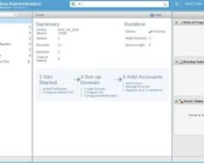
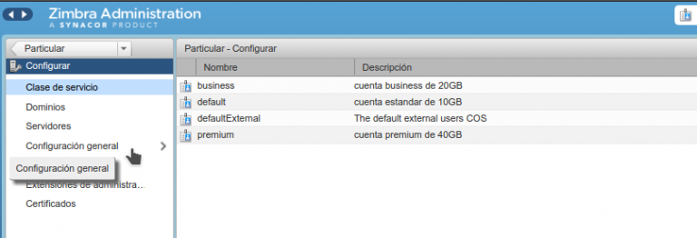

¿Qué es el Proyecto?
El proyecto consistió en la recuperación, reinstalación y puesta en marcha del servidor de correo electrónico interno Zimbra Collaboration Suite para la Contraloría del Estado Carabobo. Zimbra es una plataforma de comunicación unificada que provee servicios de correo electrónico profesional, calendario compartido y lista global de contactos para todos los empleados de la institución.
- Tecnología Principal: Zimbra Collaboration Suite (Servidor Linux).
- Propósito: Garantizar la continuidad operativa y la seguridad de las comunicaciones internas oficiales.
- Funcionalidad Clave: Proveer cuentas de correo con dominio institucional, gestión de buzones, antispam, antivirus y acceso web/móvil seguro.
¿Por qué se Realizó? (Objetivos y Desafios)
El proyecto fue crítico y se realizó debido a una falla total o degradación del sistema de correo anterior, lo que paralizó las comunicaciones oficiales de la Contraloría.
- Objetivo Principal: Restablecer el servicio de correo en el menor tiempo posible para garantizar la operatividad de la institución.
- Desafío Clave: Recuperación de datos y migración (si aplicó) o instalación limpia bajo nuevos estándares de seguridad y rendimiento.
- Necesidad Estratégica: Asegurar que un sistema de comunicación tan vital no dependiera de servicios externos, manteniendo la soberanía y control sobre la información institucional.

¿Cómo se Implementó? (Metodología Técnica)
La implementación se abordó como un proyecto de infraestructura crítica, siguiendo fases rigurosas:
- Fase I Análisis y Planificación de Recuperación: Análisis y Planificación de Recuperación:Diagnóstico de la falla del sistema anterior y evaluación de la infraestructura de hardware disponible.Definición de la arquitectura del nuevo servidor Zimbra (configuración de la memoria, almacenamiento y red).
- Fase II Instalación y Configuración del Servidor: Instalación del Sistema Operativo base (generalmente Linux: CentOS/Ubuntu).Instalación y configuración de la suite Zimbra, incluyendo la puesta a punto de servicios críticos como SMTP, IMAP/POP3, DNS y el servidor web.Configuración de políticas de seguridad (firewall, antispam, antivirus).
- Fase III Configuración de Usuarios y Pruebas: Creación masiva y/o migración de las cuentas de usuario.Implementación del Directorio Activo (LDAP) para la autenticación centralizada.Realización de pruebas de envío y recepción masivas y pruebas de estrés para asegurar el rendimiento.
- Fase IV Puesta en Producción y Documentación: Liberación del servicio a todos los usuarios y capacitación al personal de TI.Documentación completa del proceso de instalación, configuración y los procedimientos de backup y restauración.
Conclusión
La exitosa recuperación e implementación del servidor Zimbra resultó en el restablecimiento completo de las comunicaciones institucionales. El nuevo sistema opera con mayor estabilidad y seguridad que su predecesor.
